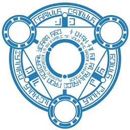

 Phantasy Star Online Episode I & II Plus
Details
| Playtime | Not Played |
| Last Activity | Never |
| Added | 21/02/2024 3:22:44 |
| Modified | 20/05/2024 22:32:56 |
| Completion Status | Not Played |
| Library | Playnite |
| Source | |
| Platform | Nintendo GameCube |
| Release Date | 31/12/2003 |
| Community Score | 83 |
| Critic Score | 89 |
| User Score | 0 |
| Genre | Action RPG |
| Developer | Sonic Team |
| Publisher | Sega |
| Feature | Multiplayer Single Player |
| Links | |
| Tag | |
Description
Before Phantasy Star Online, online gaming was limited to western PC games, particularly RPGs such as Diablo, Ultima Online, and EverQuest. Believing online play was the future, Sega chairman Isao Okawa instructed Sonic Team to develop an online game for the Dreamcast, produced by Yuji Naka. Sonic Team's experiments led to the development of ChuChu Rocket!, the first online Dreamcast game. Using what they learned from the project, and taking significant inspiration from Diablo, Sonic Team built Phantasy Star Online. As Japanese internet service providers charged for dial-up access per minute, and high-speed connections were not yet widely available, Okawa personally paid for free internet access bundled with Japanese Dreamcasts.
Phantasy Star Online was highly anticipated and launched to positive reviews and commercial success; critics praised the online gameplay as addictive but criticized the single-player mode. It received the Japan Game Award for "Game of the Year" and is recognized as a landmark console game, influencing multiplayer dungeon crawlers such as the Monster Hunter series.
Phantasy Star Online was ported to Windows and rereleased on the Dreamcast as Ver. 2 with expanded content. Following Sega's exit from the console business in 2001, the game was ported to GameCube and Xbox as Episode I & II, featuring new characters, environments and other features. Episode III: C.A.R.D. Revolution, released for GameCube in 2003, was a turn-based card game. The online series continued with Phantasy Star Universe (2006) and Phantasy Star Online 2 (2012). Sega decommissioned the last official servers in 2010; Phantasy Star Online is still played on private servers.